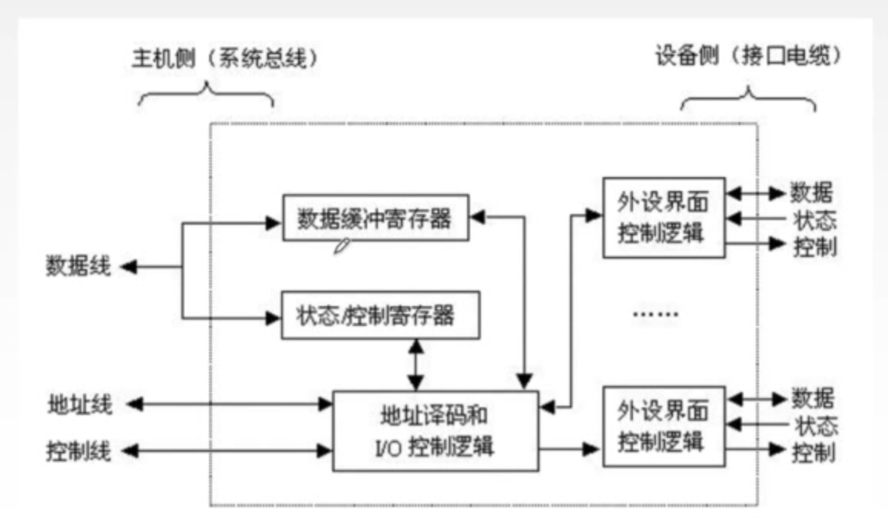
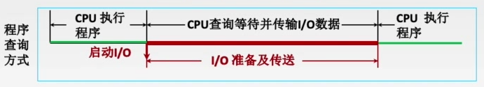
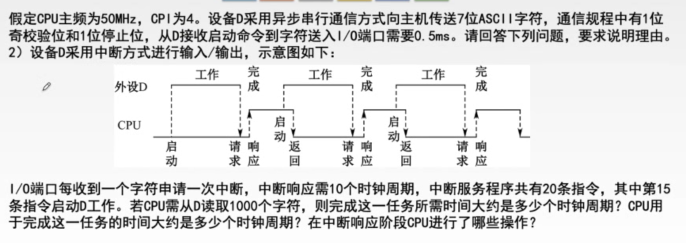
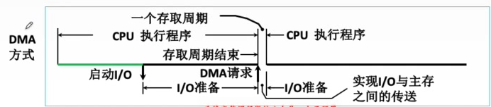
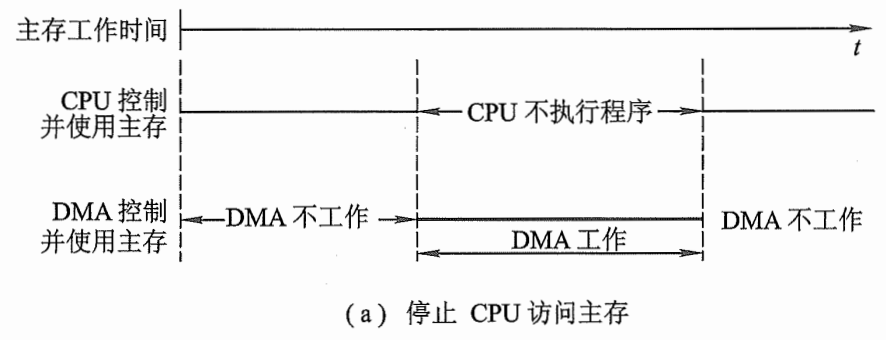
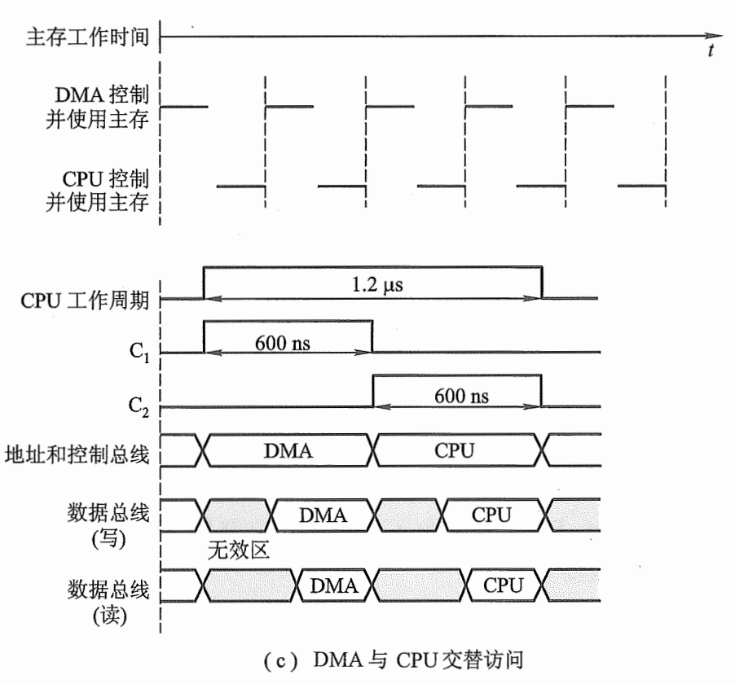
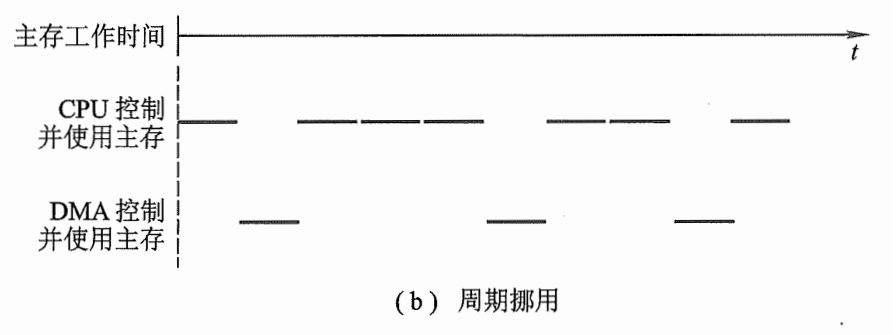

第七章 I/O系统
7.1 I/O系统基本概念
I/O接口：又称I/O控制器、设备控制器，负责协调主机与外部设备之间的数据传输。就是一块芯片，集成在主板上。
I/O控制方式
CPU如何知道键盘I/O的完成？
程序查询方式
CPU不断轮询检查I/O控制器中的“状态寄存器”，检测到状态为“已完成”之后，再从数据寄存器取出输入数据。CPU一直等待，无法执行其他程序
程序终端方式
等待键盘I/O时CPU可以先去执行其他程序，键盘I/O完成后I/O控制器向CPU发出终端请求，CPU响应中断请求，并取走输入数据
数据流：键盘→I/O接口的数据寄存器→数据总线→CPU某寄存器→主存（程序变量的对应位置）
DMA控制方式
对于快速I/O设备（如磁盘），如果每准备好一个字就向CPU发出一次中断请求，则中断频率会过高，如何解决？
高速外设通过DMA接口（也是一种I/O接口）和DMA总线直接与主存交换数据。
DMA控制方式：主存与高速I/O设备之间有一条直接数据通路（DMA总线）。CPU向DMA接口发出“读/写”命令，并指明主存地址、磁盘地址、读写数据量等参数。
DMA控制器自动控制磁盘与主存的数据读写，每次读写占用一个存取周期。每完成一整块数据读写（如1KB为一整块），才向CPU发出一次中断请求。
通道控制方式
通道是具有特殊功能的处理器，能对I/O设备进行统一管理。
通道可以识别并执行一系列通道指令，通道指令种类、功能通常比较单一。
通道执行完规定的任务后，再向CPU发出中断请求，之后CPU对中断进行处理。
I/O系统的基本组成
- I/O硬件：包括外部设备、I/O接口、I/O总线等
- I/O软件：包括驱动程序、用户程序、管理程序、升级补丁等。通常采用I/O指令和通道指令实现主机和I/O设备的信息交换。
- I/O指令：是CPU指令的一部分，操作码（识别I/O指令）+命令码（对哪个设备进行操作）+设备码（做什么操作）
- 通道指令：通道能识别的命令。通道程序提前编制好放在主存中
7.2 输入输出设备
显示器
显存
显示存储器VRAM：也称为刷新存储器，为了不断提高刷新图像的信号，必须把一帧图像信息存储在刷新存储器中。其存储容量由图像分辨率和灰度级决定，分辨率越高、灰度级越多，刷新存储器容量越大。
显存的理论最小值是一帧图像的大小。
VRAM容量=分辨率*灰度级位数
VRAM带宽=分辨率*灰度级位数*刷新频率
现代计算机中，显存除了作为当前显示帧的缓存，还会用于保存即将渲染的图像数据
字符显示器
以点阵为基础。将字符点阵存入由ROM构成的字符发生器中，CRT控制器根据键盘I/O接口信息，从显存中找对应的ASCII码，再从字符发生器中读出相应字符的点阵，最后通过CRT显示
7.3 I/O接口
- 主机和外设之间的交接界面
- 实现主机和外设之间的信息交换
- 解决主机和外设之间信息形式和工作速度的差异问题
I/O接口的功能
- 地址译码和设备选择
- 实现主机和外设之间的通信联络控制
- 数据缓冲
- 信号格式的转换。如电平转换、串/并转换或并/串转换、模/数转换或数/模转换等
- 传送控制命令和状态信息。
I/O接口的工作原理

- 主机通过数据线向I/O控制寄存器发送命令字/控制字
- 主机从状态寄存器读取状态字，获得设备或I/O控制器的状态信息
- 读/写数据：从数据缓冲寄存器发送或读取数据，完成主机与外设的数据交换
一个I/O接口可能连接多个I/O设备。这种情况下，每个设备都对应接口中的一组寄存器，操作不同的寄存器就是在操作不同的设备。
I/O接口的类型
- 按数据传送方式
- 并行接口
- 串行接口
- 按主机访问I/O设备的控制方式
- 程序查询接口
- 中断接口
- DMA接口
I/O端口及其编址
I/O接口中的各种寄存器称为I/O端口。
- 数据寄存器/端口：CPU能读写，通过数据线，实现CPU和外设之间的数据缓冲
- 状态寄存器/端口：CPU只能读，通过数据线，获取执行结果和设备的状态信息
- 控制寄存器/端口：CPU只能写，通过地址线和控制线写地址和命令，以便启动命令或更改设备模式
统一编址/存储器映射方式
I/O端口当作存储器的单元进行地址分配。用统一的访存指令访问I/O端口。依靠不同的地址码区分内存和I/O设备
优点：不需要专门的I/O指令，程序设计灵活性高；端口有较大编址空间；读写控制逻辑电路简单
缺点：端口占用了主存地址空间；外设寻址时间长（地址位数多，地址译码速度变慢）
独立编址/IO映射方式
I/O端口所用的地址单独编码。用专门的I/O指令访问I/O端口。
优点：使用专用I/O指令，程序编制清晰；I/O端口地址位数少，地址译码速度快；I/O端口的地址不占用主存地址空间
缺点：I/O指令类型少，一般只能对端口进行传送操作，程序设计灵活性差；需要CPU额外提供I/O设备读/写的控制信号，增加控制逻辑电路的复杂性。
7.4 控制方式
程序查询方式

- CPU执行初始化程序，预置传送参数
- 向I/O接口发出命令字，启动I/O设备
- 从外设接口读取其状态信息
- CPU不断查询I/O设备状态，直到外设准备就绪
- 传送一次数据，修改地址和计数器参数
- 判断传送是否结束，若未结束转第3步，直到计数器为0
特点：CPU“踏步”等待现象，CPU与I/O串行工作
优点：接口设计简单，设备量少
缺点：CPU在信息传送过程中花费大量时间查询和等待，且一段时间内只能与一台外设交换信息，效率大大降低
程序中断方式

中断系统
- 中断的基本概念
在计算机执行现行程序的过程中，出现某些急需处理的异常情况或特殊请求，CPU暂时中止现行程序，转而处理这些异常情况或特殊请求。处理完毕后CPU自动返回到现行程序的断点处，继续执行原程序。
-
工作流程
-
中断请求：中断源向CPU发送中断请求信号
- 若处于关中断状态，则不会响应任何中断请求
- 关中断状态位存储在PSW寄存器中
- 每个中断源都有一个中断请求标记触发器，当其状态为1时表示中断源有请求
-
中断响应判优
- 中断请求标记：用专门的中断请求标记寄存器的各个位来区分不同的中断源
- 中断判优：硬件排队器（硬件）或查询程序（软件）实现
- 响应优先级（在硬件线路上固定，不便改动）
- 不可屏蔽中断＞内部异常＞可屏蔽中断
- 硬件故障＞软件中断
- DMA中断＞I/O设备中断请求
- 高速设备＞低速设备，输入设备＞输出设备，实时设备＞普通设备
- 响应时间：每条指令执行阶段的结束时刻（注：内部异常引发的中断不受此限制）
-
CPU响应中断的条件
- 中断源有中断请求
- CPU允许中断及开中断（异常和不可屏蔽中断不受限制）
- 一条指令执行完毕（异常不受限制），且没有更紧迫的任务
-
中断响应过程
CPU响应中断后，需要进行一些操作，再转去中断服务程序。这些操作是由硬件直接实现的，称为中断隐指令。
操作过程是：
-
关中断（允许中断触发器置0）。
-
保存断点。将PC和PSW内容这两种不可通过指令访问的信息保存在栈或特定寄存器中。如果该中断是异常，则保存的PC地址是当前指令的地址；若是其他中断，则保存的是下一条指令的地址
-
引出中断服务程序。识别中断源，将对应的服务程序入口地址（中断向量）送入PC
- 如何根据中断请求找到对应的中断服务程序的起始地址/入口地址？
硬件向量法：给中断请求一个编号，中断向量地址形成部件根据中断请求产生对应的向量地址，再由向量地址在主存中找到对应的跳转指令，该跳转指令的地址码就是中断服务程序的入口地址，也称中断向量。
所以中断向量是个地址，而中断向量地址是地址的地址，两者是不同的。
-
-
中断处理过程
- 进入中断服务程序后，首先通过指令保存现场和中断屏蔽字
- 开中断（允许中断触发器置1）。允许更高级中断请求得到响应，实现中断嵌套
- 执行中断服务程序
- 关中断。避免恢复现场和屏蔽字时被打断
- 恢复现场和屏蔽字
- 开中断、中断返回
-
多重中断
-
又称为中断嵌套，即在中断服务程序执行过程中又被中断，转去执行其他的中断服务程序。
-
中断屏蔽字：虽然有多重中断，但是如果处理高速I/O的中断被处理低速I/O的中断打断了，优先处理低速I/O的中断的话，显然是不科学的。故不同类型的中断应屏蔽掉优先级比它更低的中断请求，以免被它们打断。这就用到了中断屏蔽字。
中断屏蔽字中，1表示屏蔽，0表示正常申请。因此一个中断源的屏蔽字中1越多，表明这个中断源的优先级越高。且每个屏蔽字中至少要有一个1（屏蔽掉同种中断源的中断）
例题

一个时钟周期为$\frac{1}{50\times 10^6}=20ns$，完成任务所需的时间为$1000\times(10+20\times4+0.5ms/20ns)=1000\times(10+80+25000)=25090000$个时钟周期
CPU用于该任务的时间为$1000\times(10+80)=9\times10^4$个时钟周期
DMA方式

直接在外设与内存之间开辟一条“直接数据通道”
数据传送不经过CPU，不需要保护、恢复CPU现场等操作
在数据准备阶段，CPU与外设并行工作
DMA控制器的组成
- 主存地址计数器：存放要交换数据的主存地址
- 传送长度计数器：记录要传送数据的长度，计数溢出时数据传送完毕，自动发中断请求
- 数据缓冲寄存器：暂存每次传送的数据
- DMA请求触发器：每当I/O设备准备好数据后，给出一个控制信号，使DMA请求触发器置位
- “控制/状态”逻辑：由控制和时序电路及状态标志组成，用于指定传送方向，修改传送参数，并对DMA请求信号、CPU响应信号进行协调与同步
- 中断机构：当一个数据块传送完毕后触发中断机构，向CPU提出中断请求
DMA工作流程
- CPU向DMA控制器指明要输入还是输出；要传送多少个数据
- DMA控制器接受外设发出的DMA请求，并向CPU发出总线请求
- CPU响应此总线请求，发出总线响应信号，接管总线控制权，进入DMA操作周期
- 确定传送数据的主存单元地址及长度，并能自动修改主存地址计数和传送长度计数
- DMA控制器规定数据在主存和外设间的传送方向（实际上是CPU告诉的），发出读写等控制信号，执行数据传送操作
- 向CPU报告DMA操作的结束
DMA传送过程
- 预处理
- 主存起始地址→AR（DMA内的主存地址计数器）
- I/O设备地址→DAR（存储要访问的数据在I/O设备中的地址）
- 传送数据个数→WC（DMA内的传送长度计数器）
- 启动I/O设备
- 数据传送
- CPU继续执行主程序
- DMA控制器允许I/O设备将数据写入数据缓冲寄存器DR，当DR写满后，DMA请求触发器向DMA控制/状态逻辑发送DMA请求，再有DMA控制/状态逻辑向总线发送总线请求
- DMA控制器将数据缓冲寄存器中的数据写入主存。
- 后处理
- 需要读写的I/O数据全部读写完毕，DMA控制器通过中断机构向CPU发出中断请求
- 做DMA结束处理：如校验送入主存的数据是否正确、决定是否继续用DMA传送其他数据块等
注意：
- 每写满一次DR，才发出一次DMA请求，将DR中的数据写入主存
- 全部数据都写入主存后，DMA控制器才向CPU发出中断请求
DMA传送方式
当I/O设备与CPU同时访问主存时，可能发生冲突，因此需要规定访问方式。
- 停止CPU访问主存
当DMA控制并使用主存时，禁止CPU访问主存

- DMA与CPU交替访存
一个CPU周期，分为C1和C2两个周期。C1专供DMA访存，C2专供CPU访存
把访存时间固定。不需要总线使用权的申请、建立和归还

- 周期挪用（周期窃取）
若I/O设备需要访存时，CPU正在访存：则等待存取周期结束让出总线
若CPU与DMA同时请求访存：则I/O访存优先，因为I/O不立即访存就可能丢失数据，此时挪用一个或几个存取周期，传送完一个数据后立即释放总线。
因为这导致了CPU在一个指令周期内部的存取周期不得不延后开始，所以为周期挪用

DMA方式与程序中断方式
| 程序中断 | DMA | |
|---|---|---|
| 数据传送 | 程序控制（程序的切换→保存和恢复现场） | 硬件控制（CPU只需进行预处理和后处理） |
| 中断请求 | 传送数据 | 后处理 |
| 响应 | 指令执行周期结束后响应中断 | 每个机器周期结束均可，总线空闲时即可响应DMA请求 |
| 场景 | CPU控制，低速设备 | DMA控制器控制，高速设备 |
| 优先级 | 优先级低于DMA | 优先级高于中断 |
| 异常处理 | 能处理异常事件 | 仅传送数据 |